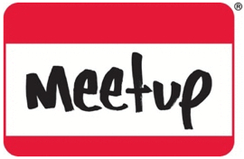

It’s always nice to uncover a seam of activity you’ve not come across before. I’ve been browsing the Birmingham groups on Meetups.com and came across quite a lot I’d never heard of so, here’s the result of some quick trawling:
{kind=link}
The Birmingham Book Club and Popular Culture Meetup Group – next meet is 24 Sept at the Green Room, Arcadian Centre. Currently reading The Secret History by Donna Tartt.
The Birmingham Film Meetup Group – next meet is a trip to Stan’s Cafe’s ‘Of All The People In All The World’ on 23 Sept. “The main purpose of this group is to meet up at various times and on various days of the week to go and see films at a variety of venues across the city”.
The Birmingham Musicians, Singers & Songwriters Meetup – next meet is an open mic night on 21 Sept at the Adam & Eve in Digbeth. “It’s a group for songwriters, singers and musicians. The aim of the group is to meet for socialising, discussions and playing our own music”.
Birmingham LGBT Book Club – next meet is 6.30pm on 23 Sept for Stans Cafe – ah, same time as the Film Meetup, cool! Monthly meets with a new book each time and “primarily for the LGBT community but all are welcome”.
Midlands Comedy, Music, Movies, Politics, Walking & Writers – next meet is 3 Oct at The Old Contemptibles near Snow Hill Station in the city centre. A new group but 40 members already.
Birmingham Psychogeographical Association – another new group with no meets planned yet. “Meet other local people who are interested in Psychogeography, reading books about psychogeography and using experimental methods to explore urban and rural areas”.
And a little further afield…
The Coventry & Warwickshire Writers Meetups – next meet is on 7 Oct at the Railway Club in Coventry. “Come to one of these Writers Meetups in Coventry and Warwickshire to review work, trade literary tips, make friends and have fun! All writers and should-be writers are welcome”.
Coventry & Warwickshire Artists Meetup Group – Red Teapot Tuesday is the name of the “drop-in artists’ get-together” at The Cafe at The Herbert, Coventry. First Tues of the month, the next one being 7 Oct.
Right, that’s freaky. The Birmingham Film Group is meeting at thericeshow at exactly the same time and date as the Birmingham bloggers group. !
http://www.paradisecircus.com/2008/09/17/september-bloggers-meet-tuesday-23rd-sept/
Should be fun!
Good Lord and the LGBT book club.
Are you coming to the Music Network meeting Thursday 25th September 4 til 6pm at The TIC?
The Birmingham branch of Musicians Union will be supplying luxury chocolate biscuits and good coffee for all. There’s food and drink afterwards supplied by the creative networks lot too. Come and talk about what you’re up to and meet some new people, you know it makes sense.
The Music Network organises a NETWORKING EVENT on the last Thursday of each month, 4-6pm at The BCU Technology and Innovation Centre(TIC), Millennium Point, Curzon Street, Birmingham, B4 7XG. (directions/info tel: 08712 262725)
The meeting is open to all involved in Birmingham Music who wish to network.
The Music Network organises the meeting for the benefit of music related businesses in the West Midlands region. If you have news to report, a presentation to give, an event to promote, any new points for discussion, a pitch to make, business cards or flyers to hand round, an appeal for help, advice or guidance or even if you just want the free tea and biscuits and some quality entertainment…you are all invited.
http://birminghammusicnetwork.com/
The 23rd is also the Eccentric City Auction (which I would contribute to if I weren’t otherwise engaged), and the AGM of a certain Friends Of group. Busy evening. Wish everone else would reschedule!
Heh, and someone was complaining recently that everything happened on Thursdays and Tues was too quiet.